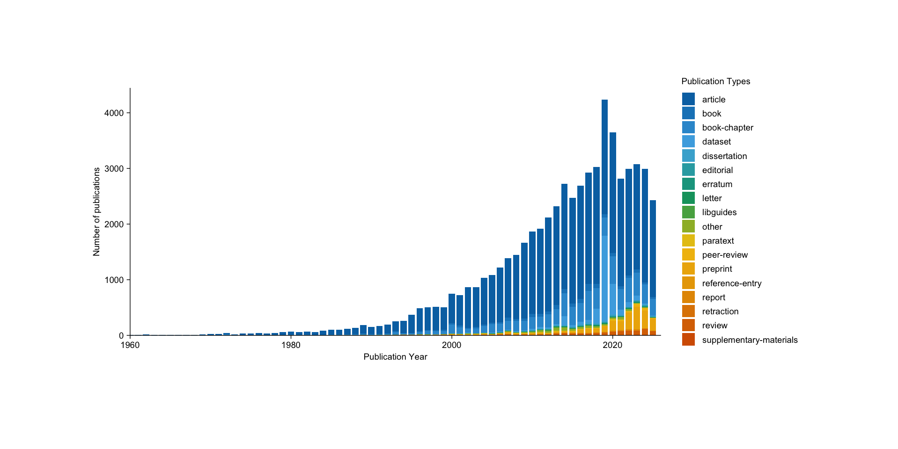
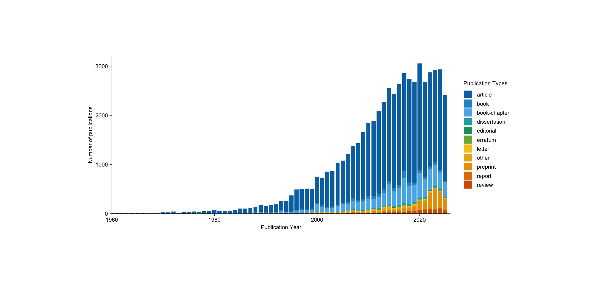

Descriptive Statistics
Getting Started
Application
Number of publications
To check the data quality of OpenAlex entries I inspect the number of publications per year. This is a crude but common used strategy to assess the completeness of repositories such as OpenAlex.
works = data[['works']] |>
bind_rows() |>
distinct(work_id, .keep_all = TRUE)
works_count = works |>
group_by(publication_year, type) |>
summarise(n = n()) |>
ungroup() |>
filter(publication_year >= 1960)
works_count_plot = works_count |>
tidyplot(x = publication_year, y = n, color = type) |>
add_barstack_absolute() |>
adjust_size(width = 15, height = 7) |>
adjust_x_axis_title("Publication Year") |>
adjust_x_axis(limits = c(1960, 2026)) |>
adjust_y_axis_title("Number of publications") |>
adjust_legend_title("Publication Types")
works_count_plot
In 2019 there is an unusual spike in the number of publication. This is predominantly driven by a couple of scholars publishing numerous datasets. Also, there are a number of publication types that might not constitute a valid type of publication. Therefore, I select only valid types and check the distribution of publications again.
valid_publication_types = c(
'article', 'book', 'book-chapter', 'dissertation',
'editorial', 'report', 'review',
# optional, to consider:
'erratum', 'letter', 'other', 'preprint'
)
works_count_plot2 = works_count |>
filter(type %in% valid_publication_types)|>
tidyplot(x = publication_year, y = n, color = type) |>
add_barstack_absolute() |>
adjust_size(width = 15, height = 7) |>
adjust_x_axis_title("Publication Year") |>
adjust_x_axis(limits = c(1960, 2026)) |>
adjust_y_axis_title("Number of publications") |>
adjust_legend_title("Publication Types")
works_count_plot2
Number of scholars
dems = data[['demographics']]
dems_long = dems |>
pivot_longer(
# only the repeated fields:
cols = matches("^(email|university|position|discipline)_\\d{2}$"),
# split into the base name (becomes columns) and the 2-digit year
names_to = c(".value", "year2"),
names_pattern = "^(.*)_(\\d{2})$",
values_drop_na = TRUE # drop rows where all new values are NA
) |>
mutate(year = as.integer(paste0("20", year2))) |>
select(-year2) |>
arrange(uid, year) |>
mutate(university = na_if(university, "")) |>
separate_rows(university, sep = "\\s*/\\s*")dems_long = dems_long |>
mutate(
uni = str_to_lower(university),
university = case_when(
str_detect(uni, 'rug') ~ "University of Groningen",
str_detect(uni, 'ru') ~ "Radboud University",
str_detect(uni, '(uu|ucu)') ~ "Utrecht University",
str_detect(uni, 'uva') ~ "University of Amsterdam",
str_detect(uni, '(tilburg|uvt)') ~ "Tilburg University",
str_detect(uni, 'eur') ~ "Erasmus University Rotterdam",
str_detect(uni, 'leiden') ~ "Leiden University",
str_detect(uni, 'vu') ~ "Vrije Universiteit",
.default = NA_character_
)
)|>
filter(!is.na(university)) |>
select(-uni) |>
distinct(uid, university, discipline, year, .keep_all = TRUE)Network Statistics
library(lubridate)
library(igraph)
library(Matrix)
priority <- c("UVA","EUR","RUG","VU","Leiden","RU","UU","Tilburg")
dems = dems %>%
mutate(
position = coalesce(!!!select(., starts_with("position_"))),
university = coalesce(!!!select(., starts_with("university_")))
) |>
mutate(
s = str_to_lower(str_squish(university)),
university = case_when(
str_detect(s, "\\brug\\b|groningen") ~ "RUG",
str_detect(s, "\\bvu\\b|vrij\\s*e?\\s*universiteit") ~ "VU",
str_detect(s, "\\buva\\b|universiteit van amsterdam|univ(?:ersity)? of amsterdam") ~ "UVA",
str_detect(s, "\\beur\\b|erasmus") ~ "EUR",
str_detect(s, "\\bleiden\\b") ~ "LU",
str_detect(s, "\\bru\\b|radboud") ~ "RU",
str_detect(s, "\\buu\\b|utrecht") ~ "UU",
str_detect(s, "\\buvt\\b|universiteit tilburg|\\btilburg\\b") ~ "TU",
TRUE ~ NA_character_
)
)
edge = data[['edge_table']] |>
filter(publication_date > ymd("2019-01-01"))# deps
library(dplyr)
library(igraph)
library(Matrix)
build_matrices <- function(D, E, directed = FALSE, weighted = TRUE,
sign_incidence = TRUE, exclude_isolates = FALSE) {
stopifnot("uid" %in% colnames(D))
stopifnot(all(c("uid", "a__uid") %in% colnames(E)))
# --- 1) Clean edges: only between known nodes, drop NAs & self-loops
nodes_vec <- unique(as.character(D$uid))
Eclean <- E %>%
transmute(uid = as.character(uid), a__uid = as.character(a__uid)) %>%
filter(!is.na(uid), !is.na(a__uid),
uid %in% nodes_vec, a__uid %in% nodes_vec,
uid != a__uid)
# --- 2) Aggregate parallel edges (counts -> weights if weighted)
Eagg <- if (weighted) {
Eclean %>% count(uid, a__uid, name = "weight")
} else {
Eclean %>% distinct(uid, a__uid) %>% mutate(weight = 1L)
}
# --- 3) Build graph (vertex order = nodes_vec)
g <- graph_from_data_frame(Eagg, directed = directed,
vertices = tibble(name = nodes_vec))
# --- 4) Optionally drop isolates (no edges to others)
if (exclude_isolates) {
keep_vids <- which(degree(g, mode = if (directed) "all" else "total") > 0)
g <- induced_subgraph(g, vids = keep_vids)
}
# refresh node vector in case isolates were dropped
nodes_vec_keep <- V(g)$name
n <- length(nodes_vec_keep)
# --- 5) Adjacency (sparse)
A <- as_adjacency_matrix(
g,
attr = if (weighted) "weight" else NULL,
sparse = TRUE
)
if (!directed) A <- forceSymmetric(A, uplo = "U")
# --- 6) Node × Edge incidence (sparse)
el <- as_data_frame(g, what = "edges")
m <- nrow(el)
if (m == 0L) {
B <- sparseMatrix(i = integer(), j = integer(), x = numeric(),
dims = c(n, 0), dimnames = list(nodes_vec_keep, character()))
edge_weight <- numeric(0)
} else {
tail_idx <- match(el$from, nodes_vec_keep)
head_idx <- match(el$to, nodes_vec_keep)
row_idx <- c(tail_idx, head_idx)
col_idx <- rep(seq_len(m), each = 2L)
vals <- if (directed && sign_incidence) c(rep(-1, m), rep(+1, m)) else rep(1, 2L * m)
B <- sparseMatrix(
i = row_idx, j = col_idx, x = vals,
dims = c(n, m),
dimnames = list(nodes_vec_keep, paste0("e", seq_len(m)))
)
edge_weight <- if ("weight" %in% names(el)) el$weight else rep(1, m)
}
# --- 7) Ego × Alter rectangular counts (uid rows × a__uid cols), restricted to kept nodes
Eclean_keep <- Eclean %>%
filter(uid %in% nodes_vec_keep, a__uid %in% nodes_vec_keep)
if (nrow(Eclean_keep) == 0L) {
EgoAlter <- Matrix(0, nrow = n, ncol = n,
dimnames = list(nodes_vec_keep, nodes_vec_keep), sparse = TRUE)
} else {
tbl <- xtabs(~ uid + a__uid, Eclean_keep)
# ensure full square ordering over nodes_vec_keep
EgoAlter <- Matrix(0, nrow = n, ncol = n,
dimnames = list(nodes_vec_keep, nodes_vec_keep), sparse = TRUE)
EgoAlter[rownames(tbl), colnames(tbl)] <- Matrix(tbl, sparse = TRUE)
}
# --- 8) Slice D to non-isolates and return as D
D_out <- D %>% filter(as.character(uid) %in% nodes_vec_keep)
list(
graph = g,
A = A, # adjacency (n × n)
B = B, # node–edge incidence (n × m)
D = D_out, # nodes tibble, non-isolates only (if exclude_isolates=TRUE)
edge_weight = edge_weight, # weights aligned to B's columns
EgoAlter = EgoAlter # uid × a__uid counts among kept nodes
)
}res <- build_matrices(dems, edge, directed = FALSE, weighted = TRUE, sign_incidence = TRUE, exclude_isolates = TRUE)
A <- res$A # adjacency (sparse Matrix)
B <- res$B # incidence (sparse Matrix)
w <- res$edge_weight
GA <- res$graph
EA <- res$EgoAlter # uid × a__uid rectangular matrix
# Example: verify dimensions/names
dim(A); dim(B); head(rownames(A)); head(colnames(B))[1] 589 589[1] 589 2176[1] "2h5Y5XM6fr" "31YWpPTcf5" "HMtVtlDrOm" "4CHOlu6p4z" "mzHx3nOJap"
[6] "5ViQZnCRf8"[1] "e1" "e2" "e3" "e4" "e5" "e6"library(igraph)
library(ggraph)
library(ggplot2)
library(dplyr)
library(scales)
# ---------------------------------------------------------------
# 0) Helper: attach node attributes from D by uid
# ---------------------------------------------------------------
attach_node_attrs <- function(g, D, id_col = "uid") {
# ensure character ids
D <- D %>% mutate(!!id_col := as.character(.data[[id_col]]))
V(g)$name <- as.character(V(g)$name)
# align D to vertex order
idx <- match(V(g)$name, D[[id_col]])
keep <- !is.na(idx)
# add every column in D (except id) as a vertex attribute
for (col in setdiff(names(D), id_col)) {
vals <- D[[col]][idx[keep]]
# coerce to simple atomic vectors (no tibbles/lists)
if (is.factor(vals)) vals <- as.character(vals)
if (is.list(vals)) {
vals <- vapply(vals, function(z)
if (length(z) == 0) NA_character_
else if (length(z) == 1) as.character(z)
else paste(z, collapse = "; "), character(1))
}
g <- set_vertex_attr(g, name = col, index = which(keep), value = vals)
}
g
}
# ---------------------------------------------------------------
# 1) One-mode plot from adjacency or existing GA
# - sizes = strength (weighted degree)
# - colors = gender; shapes = position; facets possible by university
# ---------------------------------------------------------------
plot_from_adjacency <- function(g, title = "Network (one-mode)", directed = FALSE) {
# compute basic metrics for aesthetics
V(g)$strength <- graph.strength(g, weights = E(g)$weight %||% NULL)
V(g)$degree <- degree(g, mode = if (directed) "all" else "total")
E(g)$ewidth <- rescale(E(g)$weight %||% rep(1, gsize(g)), to = c(0.2, 1.8))
set.seed(42)
ggraph(g, layout = "fr") +
geom_edge_link(aes(width = ewidth),
edge_alpha = 0.25,
colour = "grey40",
lineend = "round",
arrow = if (directed) arrow(length = unit(2, "mm")) else NULL,
end_cap = if (directed) circle(2, "mm") else square(0.5, "mm")) +
geom_node_point(aes(size = degree, color = university, shape = gender),
alpha = 0.9, stroke = 0.3) +
scale_size_continuous(range = c(2, 9), breaks = pretty_breaks(4)) +
scale_edge_width(range = c(0.2, 1.8), guide = "none") +
guides(color = guide_legend(override.aes = list(size = 5)),
shape = guide_legend(override.aes = list(size = 5))) +
theme_graph(base_family = "sans") +
labs(title = title, size = "Strength", shape = "Gender", color = "Position")
}
gA <- graph_from_adjacency_matrix(A, mode = "undirected", weighted = TRUE, diag = FALSE)
# gA <- attach_node_attrs(A, dems, id_col = "uid")
# plot_from_adjacency((gA))library(dplyr)
library(scales) # for rescale()
library(visNetwork)
data <- toVisNetworkData(gA)
N <- data$nodes |>
inner_join(
dems |>
distinct(uid, .keep_all = TRUE) |>
select(uid, clean_name, gender, origin, h_index, position, university),
by = join_by(id == uid)
) |>
# build per-node aesthetics
mutate(
label = ifelse(!is.na(clean_name) & nzchar(clean_name), clean_name, as.character(id)),
university = ifelse(is.na(university) | !nzchar(university), "(Unknown)", university)
)
# ---- color by university ----
uni_levels <- sort(unique(N$university))
pal <- scales::hue_pal()(length(uni_levels))
col_map <- setNames(pal, uni_levels)
# ---- size by h_index + shape by gender ----
N <- N |>
mutate(
color = unname(col_map[university]),
size = if (all(is.na(h_index))) 20 else
suppressWarnings(rescale(h_index, to = c(12, 40),
from = range(h_index, na.rm = TRUE))),
size = ifelse(is.na(size), 12, size),
gender_clean = tolower(as.character(gender)),
shape = dplyr::recode(
gender_clean,
"male" = "triangle",
"female" = "dot",
.default = "square"
),
title = paste0(
"<b>", label, "</b>",
"<br/>University: ", university,
"<br/>Gender: ", ifelse(is.na(gender) | !nzchar(gender), "Unknown", gender),
"<br/>h-index: ", ifelse(is.na(h_index), "NA", h_index)
)
) |>
select(-gender_clean) # cleanup helper col
E <- data$edges
p = visNetwork(nodes = N, edges = E, height = "800px", width = "100%") |>
visNodes(borderWidth = 1) |>
visOptions(highlightNearest = TRUE, nodesIdSelection = TRUE) |>
visPhysics(solver = "barnesHut") |>
visLayout(randomSeed = 42) |>
visLegend()
p |> visSave(file = "full_network.html")
p# deps
library(igraph)
library(dplyr)
library(tidyr)
# ---------- helpers (unchanged) ----------
.harmonic_closeness <- function(g, weights = NULL) {
D <- suppressWarnings(distances(g, weights = weights))
diag(D) <- Inf
(rowSums(1 / D, na.rm = TRUE)) / (vcount(g) - 1)
}
.same_attribute_share <- function(g, attr_vec) {
if (is.null(attr_vec)) return(rep(NA_real_, vcount(g)))
nbrs <- ego(g, order = 1, nodes = V(g), mode = "all")
sapply(seq_along(nbrs), function(i) {
neigh <- nbrs[[i]]
if (length(neigh) == 0) return(NA_real_)
mean(attr_vec[neigh] == attr_vec[i])
})
}
# ========================================================================
# A) From res$A / res$graph / res$D (one-mode adjacency)
# ========================================================================
compute_node_stats_from_res_adjacency <- function(
res,
node_id_col = "uid",
use_weights = TRUE,
invert_weights_for_paths = TRUE,
attr_col = NULL
){
stopifnot(all(c("A","graph","D") %in% names(res)))
A <- res$A
nodes <- res$D
mode <- if (is_directed(res$graph)) "directed" else "undirected"
g <- graph_from_adjacency_matrix(
A,
mode = mode,
weighted = use_weights,
diag = FALSE
)
V(g)$name <- rownames(A)
w_strength <- if (use_weights && "weight" %in% edge_attr_names(g)) E(g)$weight else NULL
w_dist <- if (!is.null(w_strength) && invert_weights_for_paths) {
if (any(w_strength <= 0, na.rm = TRUE)) NULL else 1 / w_strength
} else w_strength
gu <- simplify(as_undirected(g, mode = "collapse", edge.attr.comb = "sum"),
remove.multiple = TRUE, remove.loops = TRUE)
deg_all <- degree(g, mode = "all")
str_all <- graph.strength(g, mode = "all", weights = w_strength)
deg_in <- if (mode == "directed") degree(g, mode = "in") else NULL
deg_out <- if (mode == "directed") degree(g, mode = "out") else NULL
str_in <- if (mode == "directed") graph.strength(g, mode = "in", weights = w_strength) else NULL
str_out <- if (mode == "directed") graph.strength(g, mode = "out", weights = w_strength) else NULL
btw <- betweenness(g, directed = (mode == "directed"), weights = w_dist, normalized = TRUE)
clo_harm <- .harmonic_closeness(g, weights = w_dist)
eig <- tryCatch(eigen_centrality(g, directed = (mode == "directed"), weights = w_strength)$vector,
error = function(e) rep(NA_real_, vcount(g)))
pr <- page_rank(g, directed = (mode == "directed"), weights = w_strength)$vector
hubs <- if (mode == "directed") hub_score(g, weights = w_strength)$vector else rep(NA_real_, vcount(g))
auth <- if (mode == "directed") authority_score(g, weights = w_strength)$vector else rep(NA_real_, vcount(g))
clustering_local <- transitivity(gu, type = "local", isolates = "zero")
triangles_cnt <- count_triangles(gu, vids = V(gu))
coreness_k <- coreness(gu, mode = "all")
constraint_burt <- constraint(g, weights = w_strength)
knn_vec <- knn(gu)$knn
ecc <- suppressWarnings(tryCatch(eccentricity(g, weights = w_dist),
error = function(e) rep(NA_real_, vcount(g))))
comp <- components(g)$membership
comm_louvain <- membership(cluster_louvain(gu, weights = E(gu)$weight))
same_attr_share <- {
if (is.null(attr_col) || !(attr_col %in% names(nodes))) rep(NA_real_, vcount(g)) else {
attr_vec <- nodes[[attr_col]][match(V(g)$name, nodes[[node_id_col]])]
.same_attribute_share(gu, attr_vec)
}
}
out <- tibble(
!!node_id_col := V(g)$name,
degree = as.numeric(deg_all),
strength = as.numeric(str_all),
degree_in = if (!is.null(deg_in)) as.numeric(deg_in) else NA_real_,
degree_out = if (!is.null(deg_out)) as.numeric(deg_out) else NA_real_,
strength_in = if (!is.null(str_in)) as.numeric(str_in) else NA_real_,
strength_out = if (!is.null(str_out)) as.numeric(str_out) else NA_real_,
betweenness = as.numeric(btw),
closeness_harmonic = as.numeric(clo_harm),
eigenvector = as.numeric(eig),
pagerank = as.numeric(pr),
hubs = as.numeric(hubs),
authorities = as.numeric(auth),
clustering_local = as.numeric(clustering_local),
triangles = as.numeric(triangles_cnt),
coreness_k = as.numeric(coreness_k),
constraint_burt = as.numeric(constraint_burt),
avg_neighbor_degree = as.numeric(knn_vec),
eccentricity = as.numeric(ecc),
component = as.integer(comp),
community_louvain = as.integer(comm_louvain),
same_attr_share = as.numeric(same_attr_share)
)
nodes %>% left_join(out, by = setNames(node_id_col, node_id_col))
}
# ========================================================================
# B) From res$B / res$D (two-mode incidence -> one-mode projection)
# project = "rows" uses node rows (recommended here)
# ========================================================================
compute_node_stats_from_res_incidence <- function(
res,
node_id_col = "uid",
project = c("rows","cols"),
invert_weights_for_paths = TRUE,
attr_col = NULL
){
stopifnot(all(c("B","D") %in% names(res)))
project <- match.arg(project)
B <- res$B
nodes <- res$D
g_bi <- graph_from_biadjacency_matrix(B, weighted = TRUE)
V(g_bi)$name <- c(rownames(B), colnames(B))
pr <- bipartite_projection(g_bi, multiplicity = TRUE)
g1 <- if (project == "rows") pr$proj1 else pr$proj2
gu <- simplify(g1, remove.multiple = TRUE, remove.loops = TRUE)
w_strength <- if ("weight" %in% edge_attr_names(gu)) E(gu)$weight else NULL
w_dist <- if (!is.null(w_strength) && invert_weights_for_paths) {
if (any(w_strength <= 0, na.rm = TRUE)) NULL else 1 / w_strength
} else w_strength
deg <- degree(gu)
stren <- graph.strength(gu, weights = E(gu)$weight)
btw <- betweenness(gu, directed = FALSE, weights = w_dist, normalized = TRUE)
clo_h <- .harmonic_closeness(gu, weights = w_dist)
eig <- eigen_centrality(gu, directed = FALSE, weights = E(gu)$weight)$vector
pr <- page_rank(gu, directed = FALSE, weights = E(gu)$weight)$vector
clust <- transitivity(gu, type = "local", isolates = "zero")
tri <- count_triangles(gu, vids = V(gu))
corek <- coreness(gu)
cons <- constraint(gu, weights = E(gu)$weight)
knn_v <- knn(gu)$knn
ecc <- suppressWarnings(tryCatch(eccentricity(gu, weights = w_dist),
error = function(e) rep(NA_real_, vcount(gu))))
comp <- components(gu)$membership
comm <- membership(cluster_louvain(gu, weights = E(gu)$weight))
same_attr_share <- {
if (is.null(attr_col) || !(attr_col %in% names(nodes))) rep(NA_real_, vcount(gu)) else {
attr_vec <- nodes[[attr_col]][match(V(gu)$name, nodes[[node_id_col]])]
.same_attribute_share(gu, attr_vec)
}
}
out <- tibble(
!!node_id_col := V(gu)$name,
degree = as.numeric(deg),
strength = as.numeric(stren),
betweenness = as.numeric(btw),
closeness_harmonic = as.numeric(clo_h),
eigenvector = as.numeric(eig),
pagerank = as.numeric(pr),
clustering_local = as.numeric(clust),
triangles = as.numeric(tri),
coreness_k = as.numeric(corek),
constraint_burt = as.numeric(cons),
avg_neighbor_degree = as.numeric(knn_v),
eccentricity = as.numeric(ecc),
component = as.integer(comp),
community_louvain = as.integer(comm),
same_attr_share = as.numeric(same_attr_share)
)
nodes %>% left_join(out, by = setNames(node_id_col, node_id_col))
}# stats_adj |>
# group_by(gender) |>
# summarise(
# degree = mean(degree),
# betweenness = mean(betweenness),
# closeness_harmonic = mean(closeness_harmonic),
# eigenvector = mean(eigenvector),
# clustering_local = mean(clustering_local),
# coreness_k = mean(coreness_k),
# constraint_burt = mean(constraint_burt)
# )# stats_adj |>
# group_by(origin) |>
# summarise(
# degree = mean(degree),
# betweenness = mean(betweenness),
# closeness_harmonic = mean(closeness_harmonic),
# eigenvector = mean(eigenvector),
# clustering_local = mean(clustering_local),
# coreness_k = mean(coreness_k),
# constraint_burt = mean(constraint_burt)
# )# stats_adj |>
# group_by(position) |>
# summarise(
# degree = mean(degree),
# betweenness = mean(betweenness),
# closeness_harmonic = mean(closeness_harmonic),
# eigenvector = mean(eigenvector),
# clustering_local = mean(clustering_local),
# coreness_k = mean(coreness_k),
# constraint_burt = mean(constraint_burt)
# )# stats_adj |>
# group_by(university) |>
# summarise(
# degree = mean(degree),
# betweenness = mean(betweenness),
# closeness_harmonic = mean(closeness_harmonic),
# eigenvector = mean(eigenvector),
# clustering_local = mean(clustering_local),
# coreness_k = mean(coreness_k),
# constraint_burt = mean(constraint_burt)
# )